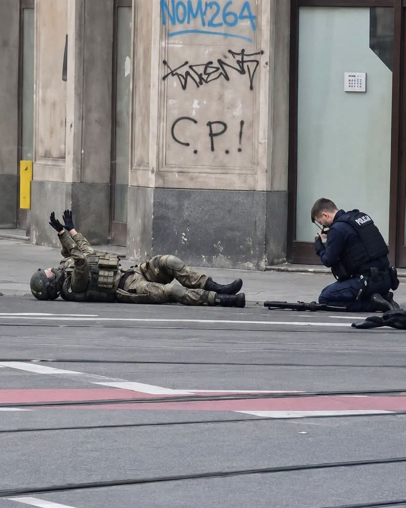
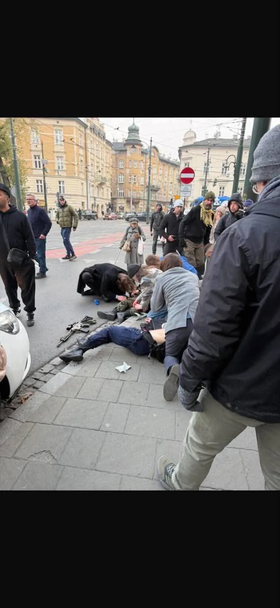
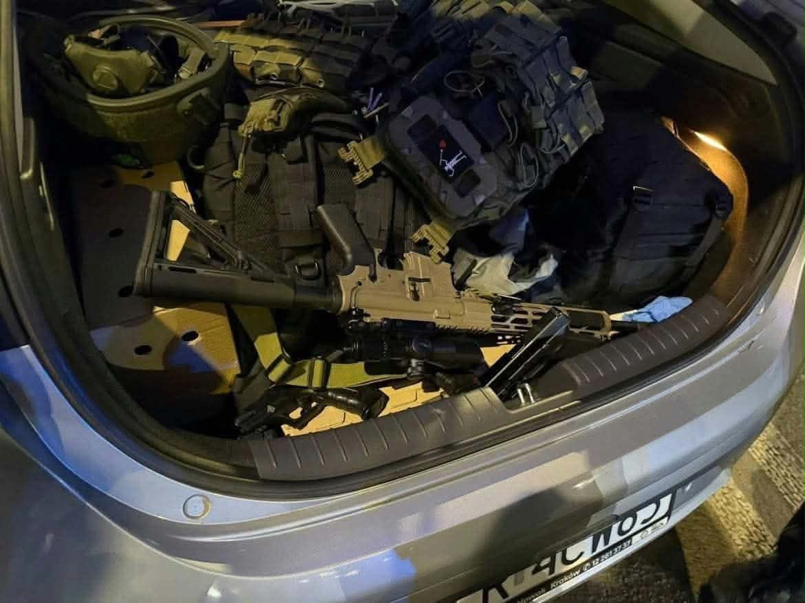
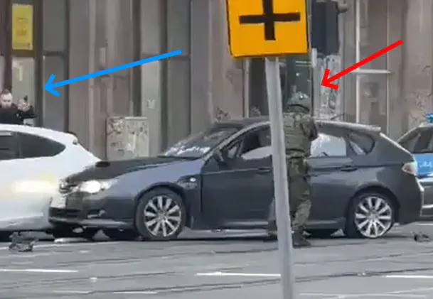

빨간색 화살표가 경찰 같지만 사실은 총기난사범
파랑색 화살표가 경찰
현재까지 6명 사망, 16명 부상
범인은 경찰의 사격에 총상을 입고 위독한 상황
범인을 제압한 폴란드 경찰은 총상 3발입고 수술중
당국이 용의자의 자택을 수색하는 과정에서
가족 3명의 시신이 추가로 발견됨




빨간색 화살표가 경찰 같지만 사실은 총기난사범
파랑색 화살표가 경찰
현재까지 6명 사망, 16명 부상
범인은 경찰의 사격에 총상을 입고 위독한 상황
범인을 제압한 폴란드 경찰은 총상 3발입고 수술중
당국이 용의자의 자택을 수색하는 과정에서
가족 3명의 시신이 추가로 발견됨
ㅇㅇ
저상태에서 대가리에 쏴어도 뭐라 못함
저긴 오또케오또케 없나보네
와 경찰 진짜 대단하다 바로 쓰러져도 이상하지 않을 상태인거 같은데..ㄷㄷ
가끔 헤드샷 맞은 사람 영상 같은 거 보면 저렇게 팔 쭉 뻗는 경우 있던데 신기함
노스 할리우스 총기 난사사건 생각나네
얼마 전에는 뭔 쿠데타 일어났다고 난리더만 이제는 총기난사까지..
희생당한 분들의 명복을 빕니다.
저정도면 경찰특공대도 투입을 했어야했겠네
크라쿠프 구도심...엄청 이쁜곳이라 관광객들도 많고할텐데...ㅠㅠ
그래서 저길 타겟으로 삼은것 같다더라
범인이 극우 민족주의자인데 외국인이 많이 오는 곳이라
영상 배경이 몇년 전 눈으로 본 건물들이라 더 무섭네...
갑자기 아가리만 터는 페미니스트들이 생각나네
프랑스 시위 터질 때만 해도 폴란드인이 우린 저런 시위 1도 업고 ㅈㄴ 안전하지롱~ be poland ㅇㅈㄹ 하더니 결국 총기난사 엔딩이네 ㄷㄷ
놀랍게도 범인이 극우 청년임이 밝혀지기 전까지 트위터에 있는 일부 폴란드 사람들은 이슬람을 배후로 생각하고 있었다.
ㅅㅂ 그렇게 총질하고 싶으면
우크라이나 전쟁터나 가던가
민간인들에게 뭔 짓거리냐?
사이버 사이코
Ar에 풀무장한 범인을 권총으로 제압한거? ㅁㅊ
와 제압한 경찰 영화주인공같네..
혼자 뒤지지 좀...
두손두발 다 들었다...
와씨.. 경찰 진짜 대단하네.. 권총으로 어케 잡은거냐
경찰 자세 이상하더니 이미 3발이나 맞았구나
범인손에 당장 총 없어서 무사한 줄..
끝까지 제압하시다니 대단하다
제압 사격할 때 자지에도 한발 박아야함 ㅅㅂ
진짜 개 미친놈이네
원래 외국인보다 같은 민족에 같은 나라 외국인무새 극우들이 사고가 맛이 간 애들이 많아서
저런 류 사고에 자주 등장하고 더 위험함 ㅋㅋ분류 방법도 참신해서 같은 민족, 국적은 안 건드릴거 같지만
귀귀걸이 코코걸이로 입맛에 맞게 뇌내망상후 쏴버리는 애들이라..독일 일본도 그렇고 노르웨이에서도 그랬었지.
크라쿠프 여행갔는데 폴란드의 경주 같은 느낌으로 되게 좋았는데 저런놈이 있네
경찰 권총탄 가슴에 다 맞았는데 군용 아머라서 저걸 안 죽네
저 병신새끼 영화보고 따라했나?
극우 새끼들 중에 제정신인 놈이 몇이나 있겠어
정사판 틀포티 어서오고
메시지를 반박할 수 없다면 메신저를 공격하라
것보다 정사판에서 깔짝깔짝 댓글질 하는 새끼가 지는 정사판 틀포티 아닌척 하는 것 존나 깜찍하네ㅋㅋㅋㅋㅋ
폴란드 총 못구하지 않음? 러시아에서 밀수입해서 구한건가
의외로 총기 금지 국가는 아님. 다만, 총기를 합법적으로 소지하려면 경찰의 허가증을 받아야 하는데... 사격 스포츠(스포츠 사격), 사냥, 수집, 호신 등의 목적을 증명해야 하고, 정신건강 검사, 범죄경력 조회, 안전 교육 등을 거쳐야 함
ㅇㅎ 유럽은 전부 총기금지일줄
정보추
뉴질랜드 영상 생각나네. 진짜 무슨 게임마냥 열댓명 다 쏴죽이던데. 저 무장 상태로 6명이면 경찰이 ㄹㅇ 열일했네
그거 열댓명이 아니고 그 사원에서만 30명은 넘을껄 총 50명 넘게 죽었고 진짜 미친놈마냥 쏴서 죽이던데 시체더미에 확인 사살까지 하고
옛날 프랑스 테러 생각나네 is 새끼들이 경찰 죽인거 존나 불쌍했는데
이미 끝난것 같은데 왜 존나쏘지
잡아다가 고문해야지
장비보면 방탄복이라 그런듯
크라쿠프 구도심 같은데 맞나? 바르샤바 이전 예전 수도였고 관광지 많고 외국인들 많고 볼것도 많고 예쁜 도시인데
우리나라에서 총기 허용이 됐다면 ㄹㅇ 이런 일 많이 일어났겠지 칼로도 일어나는데
사실 폴란드나 한국이나 허가만 받으면 총기 소지가 가능함. 다만 한국이 폴란드보다 더 엄격할 뿐...
범인 고추에 실수인 척 쏴도 됨?